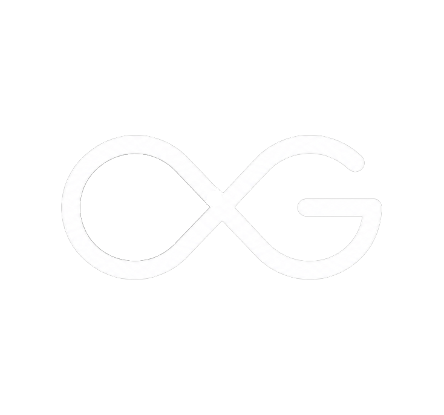
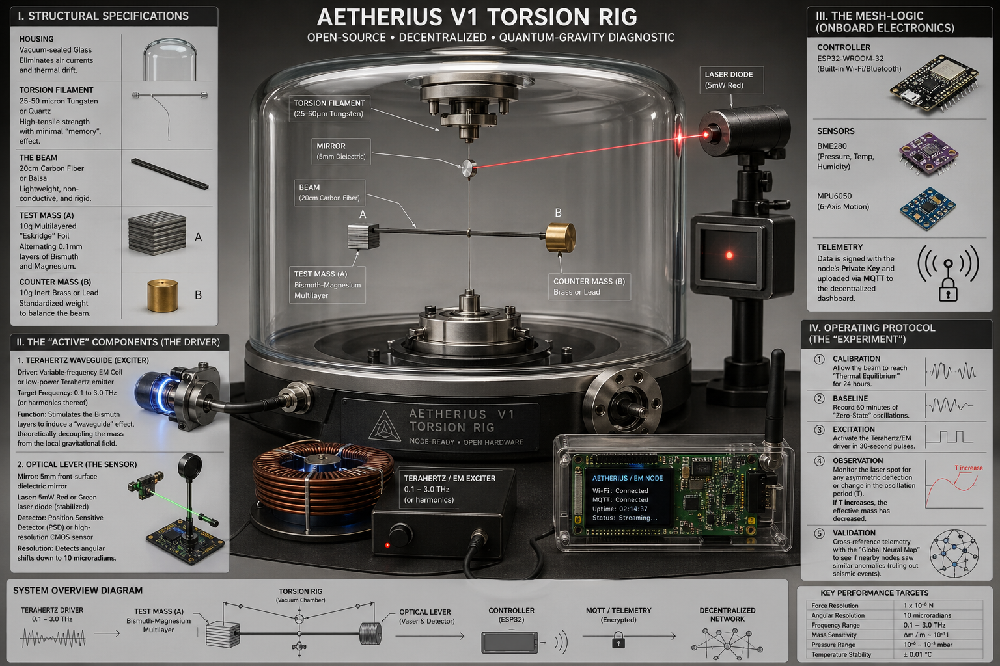
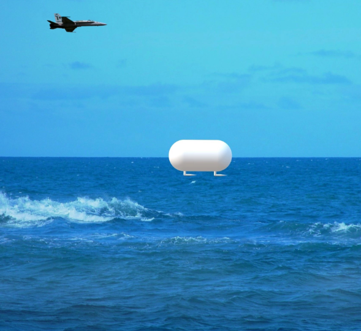
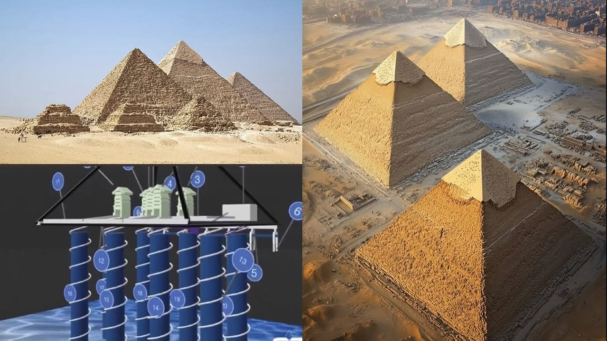
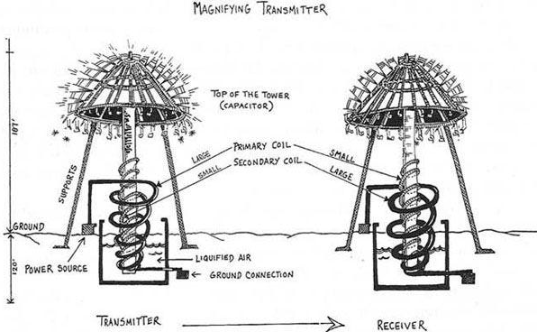
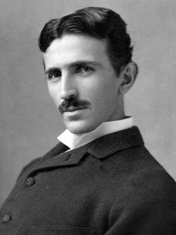
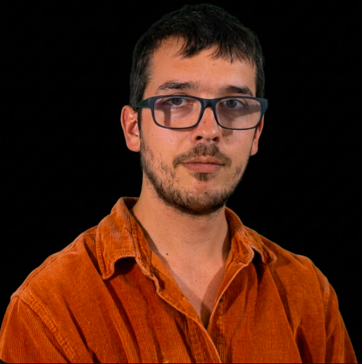

OpenGravity
A DeSci experiment to expose antigravity and free energy.
The Mission
Our mission is to liberate the physics of the future. OpenGravity exists to collectively research, validate, and open-source the keys to free energy and antigravity. We are moving these technologies out of the shadows and into the hands of humanity, ensuring that the next great leap in power and propulsion belongs to everyone.
We believe that the secrets of the universe should not be locked behind classified doors or corporate patents. By building a transparent, global laboratory, we are empowering a new generation of "citizen scientists" to participate in the ultimate engineering challenge. Together, we aren't just dreaming of a post-scarcity world; we are building the tools to realize it.
Metric Engineering
Antigravity and free energy are two sides of the same coin: Metric Engineering. Antigravity manipulates spacetime curvature (gμν) to negate weight, while free energy taps the same vacuum fluctuations (Vvac) that create that curvature. By "glitching" the stress-energy tensor, we decouple from the grid and the ground simultaneously.
We open-source this by hosting immutable data on decentralized ledgers, ensuring "born-secret" tech remains public. Contribute by hosting a Genesis Node, building the Aetherius Rig from our shared CAD files, or logging telemetry to the global mesh.

Aetherius V1 Torsion Rig
The first experiment we can all log from to observe mass fluctuations in a vacuum.
The Aetherius V1 Torsion Rig is a precision instrument for detecting extremely small changes in mass or local gravitational effects. A lightweight beam is suspended by a fine filament inside a vacuum chamber to eliminate noise. One side holds a layered bismuth–magnesium test mass, while the other balances it. External electromagnetic or terahertz pulses stimulate the test material, potentially altering its effective mass. A laser reflects off a mirror on the beam to measure tiny angular shifts. Sensors track environmental interference, and onboard electronics transmit data. By comparing oscillation changes before and after excitation, the system identifies potential "metric anomalies."
Key Components
- Housing: Vacuum-sealed glass chamber to eliminate air currents and thermal drift.
- Torsion Filament: 25-50 micron Tungsten or Quartz with high-tensile strength.
- Test Mass (A): 10g multilayered "Eskridge" foil alternating 0.1mm layers of Bismuth and Magnesium.
- Counter Mass (B): 10g inert Brass or Lead standardized weight.
- Exciter: Variable-frequency EM Coil (0.1 to 3.0 THz target frequency).
- Optical Lever: 5mW stabilized laser diode bouncing off a 5mm dielectric mirror to a CMOS position sensor.
- Telemetry: ESP32-WROOM-32 Controller integrating BME280 (Temp/Pressure) and MPU6050 (Motion) sensors via MQTT.

The "Tic Tac" Craft
A classified military secret slowly leaking into public awareness.
Observed performing impossible aerodynamic feats—dropping from 80,000 feet to sea level in seconds without sonic booms, visible exhaust, or flight surfaces—the "Tic Tac" represents applied metric engineering in the wild. These crafts do not fly through the air; they alter the local spacetime metric to fall continuously in any desired direction, encased in a vacuum-like bubble that isolates them from inertia and friction. By open-sourcing our research, we aim to reverse-engineer the same gravitational decoupling tech that has been suppressed for decades.

Ancient Megalithic Metric Engineering
Evidence of global, ancient free-energy infrastructure.
Long before modern physics, ancient civilizations may have mastered the harmonic resonance of the Earth itself. The Great Pyramid of Giza, often misunderstood as a mere tomb, exhibits the characteristics of a massive piezoelectric power plant. Deep subterranean conductive rods tapped directly into telluric currents and underground aquifers, drawing resonant energy up into the structure.
The highly conductive limestone casing, coupled with insulating granite chambers and precision-cut shafts, acted as a localized microwave or acoustic resonator. By vibrating specific geologic materials at key frequencies, these ancient structures could have generated enormous electrostatic fields or altered local spacetime density. This points to a lost era where humanity already understood and utilized metric engineering, living in harmony with the planet's natural energetic grids.
The Impact on Society

Harnessing metric engineering is the key to humanity's next true evolutionary leap. By decoupling from the Earth's gravitational field and tapping into ambient vacuum fluctuations, we eliminate the need for explosive chemical propulsion, fossil fuels, and centralized energy grids. This technology promises limitless, clean energy and the ability to travel silently across vast distances without atmospheric friction.
Beyond transportation, mastering the stress-energy tensor allows us to construct advanced shielding, revolutionize manufacturing, and lift the artificial scarcity that drives global conflict. It is the definitive step toward a post-scarcity, space-faring civilization.

Nikola Tesla
"If you want to find the secrets of the universe, think in terms of energy, frequency and vibration."
Tesla’s pioneering work on resonant frequencies, radiant energy, and zero-point fields laid the groundwork for modern metric engineering. His theories on a ubiquitous, energetic aether suggest that gravity is not an intrinsic property of mass, but an interaction of electromagnetic waves with this energetic vacuum. By applying high-frequency, high-voltage fields, we aim to recreate the energetic isolation necessary to decouple mass from local gravity.
Albert Einstein
"Physical objects are not in space, but these objects are spatially extended... there is no empty space without a field."
Einstein’s General Relativity unified gravity with the curvature of spacetime. By treating the stress-energy tensor mathematically, his equations imply that spacetime is a pliable medium. While Einstein focused on the curvature caused by massive bodies, our project explores manipulating the tensor artificially. If spacetime is a field, then directed, coherent electromagnetic resonance can theoretically un-bend or locally invert that field, nullifying gravity.

Campton Wilkins
OpenGravity Founder
A psychedelic and quantum spirituality researcher, Campton brings a deeply personal perspective to the rigid world of physics. Forged through a background of neurodivergence, overcoming addiction, and navigating family pains, his journey reflects the very essence of OpenGravity: transmuting struggles and chaos into focused, world-changing energy. Deeply inspired by the brilliant, fallen lone scientists who sacrificed everything to uncover these hidden truths, he is determined to ensure their life's work survives. By bridging the gap between consciousness, high-level metric engineering, and open-source decentralized systems, Campton leads the charge in demystifying the fundamental forces of our reality.
Dedicated to the noble researchers who have passed in the pursuit of discovery.